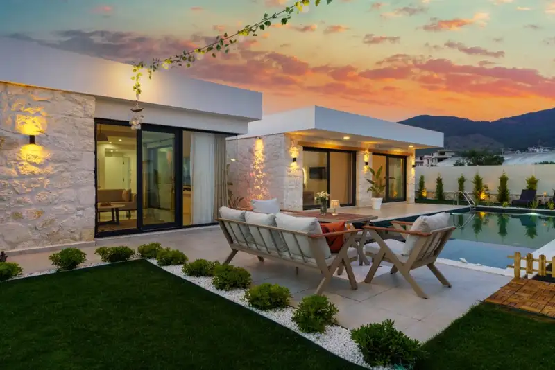

Daftar Isi
- Apa Itu Jasa Kontraktor Villa di Batu Malang?
- Mengapa Memilih Kontraktor Lokal di Kawasan Batu Malang?
- Bagaimana Cara Kerja Jasa Kontraktor Villa Secara Umum?
- Apa Saja Faktor yang Memengaruhi Biaya Pembangunan Villa?
- Apa Saja Kesalahan Umum saat Memilih Kontraktor Villa?
- Tips Memastikan Kualitas Pembangunan Villa Tetap Terjaga
- FAQ
Jasa kontraktor villa di Batu Malang adalah layanan konstruksi profesional yang menangani perencanaan, pembangunan, hingga finishing villa di kawasan Batu dan Malang Raya, mulai dari desain hingga serah terima kunci.
- Kawasan Batu dan Malang menjadi lokasi favorit pembangunan villa karena iklim sejuk dan potensi wisata
- Kontraktor villa terpercaya menawarkan layanan mulai dari desain, perizinan, konstruksi, hingga finishing
- Biaya pembangunan villa dipengaruhi oleh lokasi lahan, spesifikasi material, dan tingkat kompleksitas desain
- Memilih kontraktor berpengalaman di medan perbukitan membantu menghindari masalah struktur dan drainase
- Kontrak kerja yang jelas dan transparan menjadi kunci menghindari sengketa selama proyek berjalan
Apa Itu Jasa Kontraktor Villa di Batu Malang?
Jasa kontraktor villa di Batu Malang mencakup seluruh proses pembangunan villa, mulai dari konsultasi desain awal, perhitungan rencana anggaran biaya (RAB), pengurusan izin, hingga pelaksanaan konstruksi di lapangan. Kawasan Batu dan Malang dikenal memiliki kontur tanah berbukit dan udara sejuk, sehingga penanganan konstruksi di wilayah ini membutuhkan pengalaman khusus, terutama dalam hal pondasi, drainase, dan penataan lahan miring.
Villa di kawasan ini umumnya dibangun untuk dua tujuan utama, yaitu sebagai hunian pribadi untuk peristirahatan keluarga, atau sebagai unit investasi yang disewakan kepada wisatawan. Kedua tujuan ini memengaruhi pendekatan desain dan spesifikasi bangunan yang digunakan oleh kontraktor.
Secara umum, kontraktor villa yang beroperasi di Batu Malang memahami karakteristik cuaca setempat yang cenderung lembap dan curah hujan tinggi pada musim tertentu, sehingga pemilihan material atap, sistem drainase, dan ventilasi menjadi perhatian khusus dalam setiap proyek.
Mengapa Memilih Kontraktor Lokal di Kawasan Batu Malang?
Kontraktor lokal di kawasan Batu Malang memahami kondisi geografis, regulasi daerah, dan jaringan pemasok material setempat, sehingga proses pembangunan villa dapat berjalan lebih efisien dibandingkan menggunakan kontraktor dari luar daerah yang belum familiar dengan medan setempat.
Beberapa keunggulan menggunakan kontraktor lokal antara lain:
- Pemahaman kontur lahan berbukit dan cara menanganinya secara struktural
- Jaringan relasi dengan pemasok material bangunan di wilayah Malang Raya
- Pengalaman mengurus perizinan bangunan sesuai regulasi Kota Batu maupun Kabupaten Malang
- Kemudahan koordinasi dan pengawasan lapangan karena jarak yang lebih dekat
- Pemahaman terhadap gaya arsitektur yang cocok dengan iklim pegunungan
Kontraktor yang sudah lama beroperasi di kawasan ini biasanya juga memiliki portofolio proyek villa sebelumnya yang dapat dijadikan referensi visual bagi calon klien sebelum memutuskan bekerja sama.
Bagaimana Cara Kerja Jasa Kontraktor Villa Secara Umum?
Proses kerja jasa kontraktor villa umumnya dimulai dari tahap konsultasi awal, dilanjutkan dengan perencanaan desain, penyusunan RAB, pengurusan izin, pelaksanaan konstruksi, hingga serah terima kunci kepada pemilik.
Tahapan umum yang biasa dilalui adalah sebagai berikut:
- Konsultasi kebutuhan dan survei lokasi lahan
- Perencanaan desain arsitektur dan struktur bangunan
- Penyusunan rencana anggaran biaya (RAB) secara rinci
- Pengurusan dokumen perizinan bangunan
- Pelaksanaan konstruksi fisik di lapangan
- Tahap finishing interior dan eksterior
- Pengecekan kualitas dan serah terima kunci
Setiap tahapan idealnya didokumentasikan dalam kontrak kerja yang jelas, termasuk jadwal, spesifikasi material, dan mekanisme pembayaran bertahap sesuai progres pekerjaan.
Apa Saja Faktor yang Memengaruhi Biaya Pembangunan Villa?
Biaya pembangunan villa di Batu Malang dipengaruhi oleh beberapa faktor utama, yaitu luas bangunan, tingkat kesulitan lahan, kualitas material, serta kompleksitas desain arsitektur yang dipilih.
Faktor-faktor tersebut secara umum meliputi:
- Kondisi lahan, termasuk kemiringan dan jenis tanah yang memengaruhi biaya pondasi
- Luas bangunan dan jumlah lantai yang direncanakan
- Spesifikasi material, mulai dari kelas standar hingga premium
- Kompleksitas desain, seperti bentuk atap, jumlah bukaan, dan detail arsitektur
- Aksesibilitas lokasi, karena lahan yang sulit dijangkau dapat menambah biaya mobilisasi material
- Biaya tenaga kerja yang dapat bervariasi tergantung musim dan ketersediaan tukang di wilayah setempat
Menurut pengamatan umum di industri konstruksi kawasan wisata pegunungan seperti Batu, permintaan pembangunan villa cenderung meningkat pada periode sebelum musim liburan panjang, yang dapat memengaruhi ketersediaan kontraktor dan jadwal pengerjaan proyek.
Apa Saja Kesalahan Umum saat Memilih Kontraktor Villa?
Kesalahan umum yang sering terjadi saat memilih kontraktor villa adalah tidak memeriksa portofolio, tergiur harga murah tanpa rincian yang jelas, serta tidak memiliki kontrak kerja tertulis yang mengikat kedua belah pihak.
Beberapa kesalahan yang perlu dihindari:
- Tidak meminta rincian RAB secara detail sebelum proyek dimulai
- Mengabaikan legalitas dan izin usaha kontraktor
- Tidak memeriksa proyek villa sebelumnya sebagai bahan pertimbangan
- Tidak menyepakati sistem pembayaran bertahap sesuai progres pekerjaan
- Kurangnya komunikasi rutin dengan tim kontraktor selama proses pembangunan
Menghindari kesalahan-kesalahan tersebut dapat membantu pemilik villa terhindar dari potensi kerugian, keterlambatan proyek, maupun hasil bangunan yang tidak sesuai harapan.
Tips Memastikan Kualitas Pembangunan Villa Tetap Terjaga
Untuk menjaga kualitas pembangunan villa, pemilik disarankan melakukan pengawasan berkala, meminta laporan progres secara rutin, dan memastikan material yang digunakan sesuai dengan spesifikasi yang telah disepakati dalam kontrak.
Beberapa tips praktis yang dapat diterapkan:
- Lakukan kunjungan lapangan secara berkala, minimal setiap tahap penting selesai
- Minta dokumentasi foto progres pekerjaan secara rutin dari kontraktor
- Libatkan pengawas independen apabila diperlukan untuk proyek berskala besar
- Pastikan spesifikasi material dicantumkan secara tertulis dalam kontrak
- Diskusikan mekanisme penyelesaian apabila terjadi keterlambatan atau perubahan desain